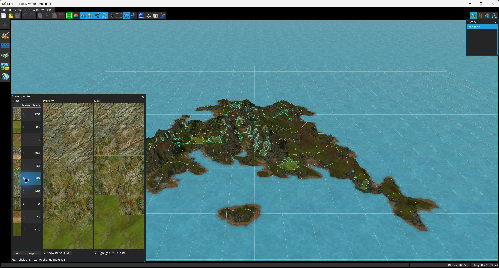

Una región define cómo cambian los materiales del terreno según la altitud y el noise, y es la principal clasificación de superficie almacenada en las celdas.

Abre . La lista muestra miniatura, nombre y porcentaje aproximado de celdas que usan cada región. El editor ofrece los controles Añadir e Importar.
| Reemplazar apariciones | Reasigna las celdas que usan esta región a otra región de destino. |
| Copiar de / Duplicar | Copia el tipo de terreno, mapa de materiales y nombre desde otra región, o clona la región seleccionada. |
| Importar de / Exportar | Lee desde .lndc u otro .lnd; exporta a .lndc. |
| Establecer tipo de terreno / Renombrar | Edita los metadatos. |
| Intercambiar / Eliminar | Solo se habilita cuando la región implicada no está en uso, protegiendo los índices activos de las celdas. |
El mezclador representa la pila de materiales de la región a lo largo de la altitud. Arrastra verticalmente los puntos de control para mover las transiciones. Con clic derecho puedes dividir una transición hacia arriba/abajo, insertar o cambiar un material, o eliminarlo cuando la disposición actual lo permita.
La vista previa puede mostrar la contribución de la noise map. Editar… abre el Editor de noise map. El Editor de regiones también puede sombrear las regiones no seleccionadas y contornear la seleccionada en la vista 3D principal.